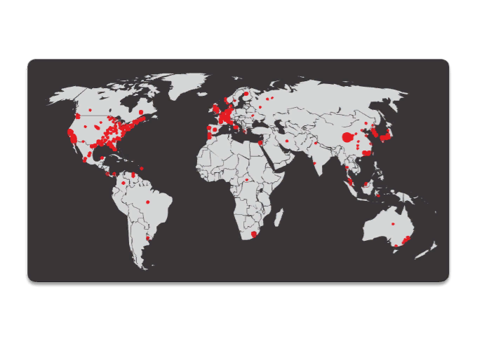
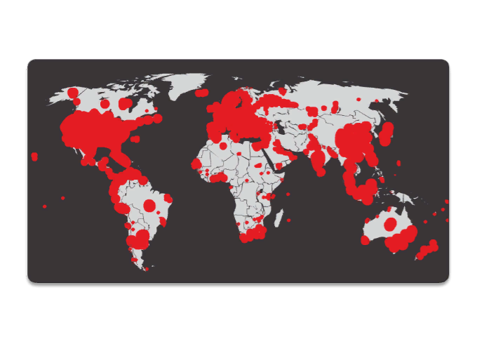
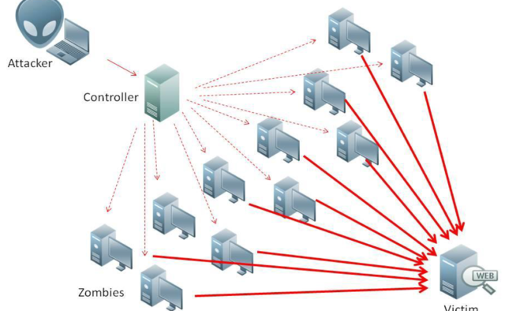
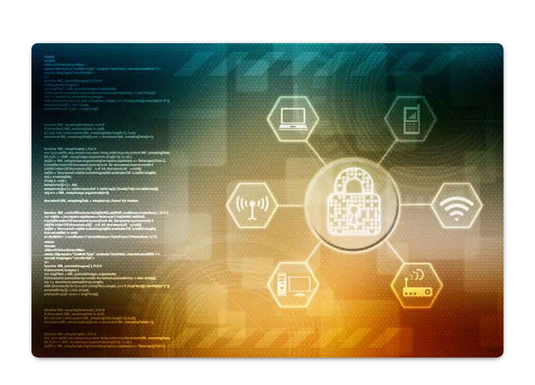
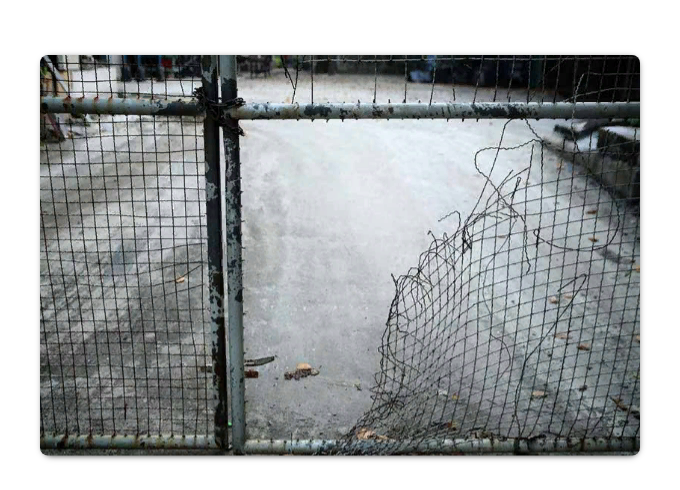

Вразливость системи безпеки та експлойти
Вразливості системи безпеки - це будь-які дефекти програмного або апаратного забезпечення. Після отримання інформації про вразливість, зловмисники намагаються її використати. Експлойт - це термін, який вживають для опису програми, що написана для використання відомої вразливості. Використання експлойта для вразливості називається атакою. Мета атаки - отримати доступ до системи та розміщених на ній даних або до певного ресурсу.
Вразливості програмного забезпечення
Вразливості програмного забезпечення зазвичай є наслідками помилок в коді операційної системи або коді застосунку. Незважаючи на всі зусилля компаній з пошуку та виправлення вразливих місць ПЗ, регулярно виявляються нові вразливості. Microsoft, Apple та інші виробники операційних систем випускають виправлення та оновлення майже щодня. Оновлення прикладних програм також є загальноприйнятою практикою. Такі програми, як веб-браузери, мобільні застосунки та веб-сервери часто оновлюються компаніями та організаціями, які за них відповідають.
Вразливості апаратного забезпечення
Вразливості апаратного забезпечення часто обумовлені недоліками його проектування. Наприклад оперативна пам'ять (RAM), по своїй суті, є набором дуже близько розташованих один до одного конденсаторів. Було виявлено, що через конструктивні особливості постійні зміни в одному з цих конденсаторів можуть впливати на сусідні. На основі цього конструктивного недоліку було створено експлойт Rowhammer. Постійно перезаписуючи пам'ять за тими самими адресами, експлойт Rowhammer дозволяє змінювати значення даних у сусідніх комірках адресної пам'яті, навіть якщо вони захищені.
Вразливості апаратного забезпечення характерні для конкретних моделей пристроїв і зазвичай не використовуються під час випадкових спроб компрометації. Оскільки експлойти апаратного забезпечення характерні для цілеспрямованих атак, традиційний засоби захисту від зловмисного ПЗ та фізична безпека є достатніми для безпеки пересічного користувача.
Класифікація вразливостей системи безпеки
Більшість вразливостей програмного забезпечення належать до однієї з наступних категорій:
Переповнення буфера (Buffer overflow)– ця вразливість виникає, коли дані записуються за межами буфера. Буфери - це області пам'яті, виділені застосунку. Змінюючи дані за межами буфера, застосунок отримує доступ до пам'яті, яка була виділена для інших процесів. Це може спричинити крах системи, компрометацію даних або отримання повноважень більш високого рівня.
Неперевірені вхідні дані (Non-validated input) – програми часто працюють з вхідними даними. Ці дані, що надходять до програми, можуть мати зловмисний вміст, який здатен спричинити непередбачену поведінку програми. Розглянемо програму, яка отримує зображення для обробки. Зловмисник може створити файл зображення із некоректними розмірами. Некорректні розміри можуть примусити програму виділити буфери неправильних та неочікуваних розмірів.
Стан гонитви (Race conditions) – ця вразливість полягає в тому, що результат події залежить від того, в якій послідовності, або ж з якою тривалістю виконуються деякі окремі події. Стан гонитви стає джерелом вразливості, коли події, які вимагають впорядкування або часової синхронізації, не відбуваються у правильному порядку або не вкладаються у належні часові межі.
Недоліки реалізації системи безпеки (Weaknesses in security practices) – системи та конфіденційні дані можуть бути захищені за допомогою таких методів, як аутентифікація, авторизація та шифрування. Розробники не повинні намагатися створювати власні алгоритми безпеки, оскільки це, найпевніше, додасть вразливостей. Настійно рекомендується використовувати готові бібліотеки безпеки, які вже протестовані та перевірені.
Проблеми контролю доступу (Access-control problems ) – Контроль доступу – це процес, який визначає дозволи на певні дії. Він охоплює питання від управління фізичним доступом до обладнання, до визначення, хто має доступ до ресурсу, наприклад, файлу, і що він з ним може робити, читати чи змінювати. Багато вразливостей безпеки з'являється через неправильне використання засобів контролю доступу.
Майже всі засоби контролю доступу та заходи безпеки можна обійти, якщо зловмисник має фізичний доступ до цільового обладнання. Наприклад, не має значення які дозволи ви встановили для файлу, ОС не може заборонити зловмиснику зчитати дані безпосередньо з диску в обхід операційної системи. Для захисту пристроїв та розміщених на них даних потрібно застосовувати обмеження фізичного доступу. Для захисту даних від крадіжки або пошкодження слід використовувати методи шифрування.
Типи зловмисного ПЗ
Зловмисне програмне забезпечення (Malicious Software) - це будь-який код, який може використовуватися для викрадання даних, обходу системи керування доступом, пошкодження або компрометації системи. Нижче наведено кілька загальних типів зловмисного ПЗ:
Шпигунські програми (Spyware) – це зловмисне програмне забезпечення, призначене для стеження та шпигування за користувачем. Шпигунські програми часто містять засоби відстеження активності, зчитування з клавіатури та перехоплення даних. Намагаючись подолати заходи безпеки шпигунські програми часто змінюють налаштування безпеки. Шпигунські програми часто прив'язуються до легального програмного забезпечення або до троянських коней.
Рекламне ПЗ (Adware) – призначене для автоматичного поширення реклами. Рекламне ПЗ часто встановлюється разом з деякими версіями програмного забезпечення. Іноді рекламне ПЗ призначене лише для поширення реклами, але досить часто з ним поширюється шпигунське ПЗ.
Бот (Bot) – походить від слова robot, бот – це шкідлива програма, призначена для автоматичного виконання дій, зазвичай в Інтернеті. Хоча більшість ботів безпечні, зростання кількості зловмисних ботів призводить до створення бот-мереж (botnet). Певна кількість комп'ютерів інфікується ботами, які запрограмовані спокійно очікувати команди від зловмисника.
Програми-вимагачі (Ransomware) – це шкідливе ПЗ призначене для блокування комп'ютерної системи або розміщених на ній даних до моменту здійснення викупу. Такі програми зазвичай шифрують дані на комп'ютері за допомогою невідомого користувачу ключа. Деякі інші версії програм-вимагачів можуть для блокування системи використати її певні вразливості. Ransomware розповсюджується через завантажений файл або певну вразливість програмного забезпечення.
Псевдоантивірус (Scareware) – це тип шкідливого ПЗ, що переконує користувача виконати конкретну дію, використовуючи його страх. Scareware створює спливаючі вікна, схожі на діалогові вікна операційної системи. Ці вікна відображають підроблені повідомлення про те, що система знаходиться під загрозою або необхідне виконання відповідної програми для повернення до нормальної роботи. Насправді жодних проблем на комп'ютері немає, і якщо користувач погоджується та дозволяє запустити зазначену програму, його система буде заражена шкідливим ПЗ.
Руткіт (Rootkit) – це зловмисне програмне забезпечення, призначене для змін в операційній системі з метою створення чорного ходу (backdoor). Після чого нападники використовують цей чорний хід для віддаленого доступу до комп'ютера. Більшість руткітів використовують вразливості ПЗ для підвищення привілеїв та модифікації системних файлів. Руткітам також притаманні зміни в системних інструментах експертизи та моніторингу, що дуже ускладнює виявлення цього зловмисного ПЗ. Часто для знищення руткіту необхідноповністю очистити ПК та перевстановити операційну систему.
Вірус (Virus) - це шкідливий виконуваний код, який прикріплюється до інших виконуваних файлів, часто легітимних програм. Більшість вірусів вимагає активації з боку кінцевих користувачів і можуть справцьовувати у певний день або час. Віруси можуть бути нешкідливими і просто відображати рисунок або можуть мати руйнівні наслідки, такі, як зміна або видалення даних. Віруси також можуть бути запрограмовані на мутацію для запобігання виявленню. На сьогодні більшість вірусів поширюється через USB-накопичувачі, оптичні диски, мережні ресурси або електронною поштою.
Троянський кінь (Trojan horse) - це зловмисне ПЗ, яке здійснює шкідливі дії під виглядом бажаної операції. Цей шкідливий код використовує привілеї користувача, який його запускає. Часто трояни містяться в файлах зображень, аудіофайлах або іграх. Троянський кінь відрізняється від вірусу тим, що він приєднується до невиконуваних файлів.
Черв'яки або хробаки (Worms) – це шкідливий код, який клонує себе, самостійно використовуючи вразливості в мережах. Хробаки зазвичай уповільнюють роботу мереж. Якщо для активації вірусу необхідно запустити на виконання програму-носій, то хробаки можуть працювати самостійно. Участь користувача потрібна тільки під час первинного зараження. Після того, як хост заражений, хробак може швидко поширюватися мережею. Хробаки мають схожі шаблони поведінки. А саме, використовують вразливість системи, мають здатність до самостійного розповсюдження і виконання дій на користь зловмисника.


Хробаки є причиною деяких найбільш руйнівних атак в Інтернеті. Як показано на рисунку, у 2001 році хробак Code Red інфікував 658 серверів. На рисунку 2 зображено як за 19 годин він інфікував понад 300 000 серверів.
Людина посередині (Man-In-The-Middle або MitM) – дає змогу зловмиснику контролювати потік даних між користувачами без їх відома. За допомогою такого рівня доступу зловмисник може перехоплювати, збирати та підмінювати інформацію користувача перш ніж предати її одержувачу. Атаки MitM широко використовуються для викрадення фінансової інформації. Існує безліч зловмисних програм та методик, які наділяють атакуючих можливостями MitM.
Посередник в мобільному телефоні (Man-In-The-Mobile або MitMo) – варіант атаки "Людина посередині", який використовується для отримання контролю над мобільним пристроєм. Заражений мобільний пристрій може отримати наказ зібрати конфіденційну інформацію користувача і відправити її нападникам. ZeuS, як приклад експлойта з можливостями MitMo, дає змогу атакуючим непомітно перехоплювати SMS-повідомлення, які надсилаються користувачам під час проведення 2-етапної перевірки.
Симптоми зараження шкідливим ПЗ
Незалежно від того, яким типом зловмисного ПЗ інфікована система, можна виділити найпоширеніші симптоми того, що пристрій заражено:
- Збільшується навантаження на центральний процесор.
- Знижується швидкодія комп'ютера.
- Комп'ютер часто зависає або дає збої.
- Знижується швидкість перегляду веб-сторінок.
- З'являються незрозумілі проблеми з мережними з'єднаннями.
- Модифікуються файли.
- Видаляються файли.
- З'являються невідомі файли, програми або значки на робочому столі.
- Запущено невідомі процеси.
- Програми самостійно припиняють виконання або змінюють свої налаштування.
- Електронна пошта надсилається без відома та згоди користувача.
Соціальна інженерія
Соціальна інженерія - це психологічна атака доступу, яка намагається маніпулювати особами з метою спонукання іх до виконання певних дій або розголошення конфіденційної інформації. Соціальні інженери часто використовують бажання людей допомогти іншим, а також їхні слабкості. Наприклад, зловмисник може подзвонити уповноваженому працівнику з приводу нагальної проблеми, вирішення якої вимагає негайного доступу до мережі. Зловмисник може розраховувати на марнославство співробітника, посилатися на авторитет або скористатися жадібностю працівника.
Розглянемо деякі види атак соціальної інженерії:
- Претекстінг (Pretexting) - атакуючий дзвонить особі і обманом намагається отримати доступ до привілейованих даних. Наприклад, зловмисник вимагає надати особисті або фінансові дані для підтвердження особи одержувача.
- Тейлгейтінг (Tailgating) - несанкціонований прохід за однією перепусткою. Це ситуація, коли зловмисник швидко прослизає через пункт контролю слідом за легальним працівником до охороняємої зони.
- Послуга за послугу (Quid pro quo) - це коли злочинець запитує особисту інформацію від учасника в обмін на щось, наприклад, безкоштовний подарунок.
Злам пароля від Wi-Fi
Злам пароля Wi-Fi - це процес пошуку пароля, який використовується для захисту бездротової мережі. Ось деякі методи, які використовуються, щоб зламати пароль:
Соціальна інженерія (Social engineering) – зловмисник маніпулює людиною, яка знає пароль, змушуючи розкрити його.
Атаки грубої сили (Brute-force attacks) – нападник перебирає велику кількість можливих комбінацій у спробі вгадати пароль. Наприклад, якщо пароль - це 4-значне число, зловмиснику доведеться перевірити кожну з 10 000 комбінацій. Атаки грубої сили зазвичай залучають файл зі списком слів. Цей текстовий файл містить список слів, узятих зі словника. Далі програма підставляє кожне слово та поширені комбінації. Атаки грубої сили вимагають часу, тож процес вгадування складних паролів буде значно травалішим. До інструментів для зламу паролів через атаку грубої сили належать Ophcrack, L0phtCrack, THC Hydra, RainbowCrack і Medusa.
Прослуховування мережі (Network sniffing) – під час прослуховування та захоплення пакетів зловмисник може виявити пароль, якщо він пересилається у незашифрованому (відкритому) вигляді. Якщо пароль зашифрований, зловмисник, як і раніше, може розкрити його, використовуючи інструмент для зламу паролів.
Фішинг
Фішинг, це коли зловмисник надсилає шахрайського електронного листа, який виглядає як повідомлення від легального надійного джерела. Мета цього повідомлення - змусити одержувача встановити зловмисне ПЗ на своєму пристрої або розкрити особисту чи фінансову інформацію. Прикладом фішингу є підробка листів електронної пошти, які виглядають як повідомлення, надіслані роздрібним магазином з проханням до користувача натиснути на посиланні для участі у розігруванні призів. Посилання може переадресовувати на підроблений сайт, який запитує особисту інформацію, або може встановити вірус.
Спрямований фішинг - це цілеспрямована фішингова атака. Щоб дістатися жертв фішинг і спрямований фішинг використовують електронні листи, але спрямований фішинг націлений на конкретну особу. Переш ніж надіслати електронне повідомлення нападник вивчає інтереси жертви. Наприклад, зловмисник дізнався, що жертва цікавиться автомобілями і хоче купити конкретну модель. Зловмисник приєднується до того ж дискусійного автомобільного форуму, що і жертва, готує пропозицію продажу автомобіля і надсилає її жертві електронною поштою. Електронний лист містить посилання на фотографію автомобіля. Коли жертва натискає на посилання, шкідливе ПЗ встановлюється на її комп'ютер.
Фішинг
Використання вразливостей - це ще один розповсюджений метод проникнення. Нападники сканують комп'ютери, щоб отримати інформацію про них. Нижче наведено загальний метод використання вразливостей:
Крок 1. Збір інформації про систему жертви. Це можна зробити багатьма різними способами, такими як сканування портів або застосування методів соціальної інженерії. Мета полягає в тому, щоб дізнатись якомога більше про комп'ютер жертви.
Крок 2. На кроці 1 зловмисник може дізнатися таку цінну інформацію, як встановлена операційна система, її версія та перелік сервісів, які працюють на ній.
Крок 3. Коли операційна система та її версія відомі, атакуючий шукає будь-які специфічні вразливості, виявлені для цієї версії ОС або інших сервісів.
Крок 4. Коли виявлена вразливість, атакуючий шукає раніше написаний для неї експлойт. Якщо таких експлойтів не було створено, зловмисник може розглянути можливість його написання.
Вдосконалені постійні загрози
Ще один зі способів проникнення - це вдосконалені постійні загрози (advanced persistent threats - APTs). Вони складаються з багатофазних, довготривалих, непомітних та складних дій, спрямованих на конкретну жертву. APT-атаки є складними і для їх виконання необхідні досвід та високий рівень кваліфікації нападника, тому вони зазвичай добре фінансуються. APT спрямовані на організації або країни з комерційних або політичних причин.
Метою АРТ є розгортання спеціального шкідливого програмного забезпечення на одній або кількох системах жертви. Зазвичай атаки пов'язані зі шпигунством в мережах та залишаються невиявленими. Через багатоетапне виконання та використання декількох типів налаштовуваних шкідливих програм, які впливають на різні пристрої та виконують визначені функції, окремий нападник часто не має навичок, ресурсів або наполегливості для виконання APT.
Dos
Атака "Відмова в обслуговуванні" (DoS) - це тип мережної атаки. Результатом DoS-атаки є переривання роботи мережних сервісів для користувачів, пристроїв або застосунків. Розрізняють два основні типи DoS-атак:
Надмірна кількість даних (Overwhelming Quantity of Traffic) - це коли до мережі, хоста або програми надсилається величезна кількість даних з такою швидкістю, що вони не спроможні їх обробити. Це спричиняє затримку передачі чи відгуку, або відмову пристрою, аварійне завершення роботи сервісу.
Пакети зловмисного формату (Maliciously Formatted Packets) - це коли пакет зловмисного формату надсилається до хоста або програми і одержувач не здатен його обробити. Наприклад, зловмисник пересилає пакети, що містять помилки, які не можуть бути ідентифіковані програмою, або передає неправильно відформатовані пакети. Це може викликати сповільнення роботи або відмову пристрою-отримувача.
DoS атаки вважаються серйозною загрозою, оскільки вони можуть легко переривати зв'язок та викликати значну втрату часу та грошей. Ці атаки відносно прості для виконання навіть некваліфікованим нападником.
DDos

Розподілена DoS атака (Distributed DoS Attack, DDoS) подібна до атаки DoS, але вона походить від декількох скоординованих джерел. Наприклад, атака DDoS може відбуватися наступним чином:
Нападник створює мережу заражених хостів, яка називається ботнетом. Заражені хости називаються "зомбі". Їх контролюють системи керування.
Зомбі-комп'ютери постійно сканують і заражають нові хости, збільшуючи кількість "зомбі". У призначений час, хакер наказує центрам керування розпочати DDoS-атаку за участі зомбі-ботнету.
Натисніть кнопку Проглянути на рисунку, щоб переглянути анімацію DDoS-атаки.
Отруєння SEO
Пошукові системи, такі як Google, працюють шляхом ранжування сторінок та надання релевантних результатів на основі пошукових запитів користувачів. Залежно від значимості вмісту веб-сайту, він може відображатися вище або нижче в переліку результатів пошуку. Пошукова оптимізація (Search Engine Optimization, SEO) - це набір методів, що використовуються для покращення рейтингу веб-сайту в пошуковій системі. В той час як багато легальних компаній спеціалізуються на оптимізації веб-сайтів з метою їх кращого позиціонування, зловмисник може використовувати SEO для того, щоб його шкідливий веб-сайт відображався вище у результатах пошуку. Ця техніка називається "отруєння SEO".
Найпоширенішою метою отруєння SEO є збільшення трафіку на шкідливі веб-сайти, які можуть містити зловмисні програми або застосовувати прийоми соціальної інженерії. Щоб розташувати шкідливий сайт вище у результатах пошуку, зловмисники використовують популярні пошукові терміни.
Що таке змішані атаки?

Змішані атаки (Blended attacks) - це атаки, які використовують кілька методів для компрометації жертви. Використовуючи одразу декілька різних методів атаки, зловмисники застосовують шкідливі програми, які є гібридом хробаків, троянських коней, шпигунських програм, клавіатурних шпигунів, спаму та фішингових схем. Тенденція змішаних атак схильна до використання більш складного зловмисного програмного забезпечення та створює великі ризики для користувачів.
Найпоширеніший тип змішаної атаки використовує спам-листи, миттєві повідомлення або легальні веб-сайти для поширення посилань через які шкідливе або шпигунське програмне забезпечення непомітно завантажується на комп'ютер. Ще однією поширеною змішаною атакою є використання DDoS у поєднанні з фішинговими електронними листами. Спочатку DDoS-атака використовується для блокування веб-сайту популярного банку та надсилання його клієнтам електронних листів з вибаченнями за незручності. Ці електронні листи також скеровують користувачів до підробленого "аварійного сайту", де їх інформація авторизації може бути викрадена.
Більшість з найнебезпечніших комп'ютерних черв'яків, таких як Nimbda, CodeRed, BugBear, Klez і Slammer краще класифікувати як змішані атаки:
- Деякі різновиди Nimbda розповсюджувалися через вкладення в електронні листи; завантаження файлів зі скомпрометованого веб-сервера та обмін файлами Microsoft (наприклад, через анонимні ресурси).
- Інші різновиди Nimbda могли змінювати привілеї гостьових облікових записів системи, щоб надати зловмиснику або шкідливому коду адміністративні права.
До змішаних атак також належать нещодавно створені черв'яки Conficker і ZeuS/LICAT. Conficker використовував всі традиційні методи розповсюдження.
Що таке зменшення наслідків?

Хоча більшість успішних компані сьогодні знають про спільні проблеми безпеки і докладають значних зусиль для їх запобігання, жоден комплекс заходів захисту не є на 100% ефективним. Якщо у зловмисників є можливість отримати значну вигоду, то злам, скоріш за все відбудеться, тож компанії та організації мають бути готові мінімізувати можливі збитки.
Важливо розуміти, що наслідки порушення безпеки стосуються не лише технічного аспекту, крадіжки даних, пошкоджених баз даних або порушення прав інтелектуальної власності, а також впливають на репутацію компанії. Реагування на злам потрібно дуже динамічно.
Нижче наведені деякі важливі заходи, яких, на думку багатьох експертів з питань безпеки, компанія повинна вжити при виявленні зламу:
- Повідомте про проблему. Співробітники компанії мають бути поінформовані про проблему і закликані до дій. З зовнішніми клієнтами необхідно зв'язатися безпосередньо, а також потрібно зробити офіційне повідомлення. Це забезпечує прозорість, що має вирішальне значення в таких ситуаціях.
- Будьте щирими та визнайте свою відповідальність, якщо злам відбувся з вини компанії.
- Надайте детальну інформацію. Поясніть, чому ситуація відбулася і що конкретно було скомпрометовано. Очікується також, що компанія оплачує сервіси захисту від викрадання ідентифікаційних даних клієнтів.
- Зрозумійте, що стало причиною та сприяло зламу. Якщо необхідно, для дослідження та вивчення деталей найміть експертів-криміналістів.
- Застосуйте результати експертизи, щоб уникнути подібних порушень у майбутньому.
- Переконайтеся, що не було скомпрометовано щось інше, всі системи є вичищені і не було встановлено backdoors-закладок. Зловмисники часто намагаються залишити чорні ходи для полегшення майбутніх втручань. Переконайтеся, що цього не відбулось.
- Навчіть співробітників, партнерів та клієнтів, як запобігти зламам у майбутньому.
Висновки:
У цьому розділі розглянуто способи, за допомогою яких фахівці з кібербезпеки аналізують наслідки кібератаки. Пояснено різні категорії вразливостей програмного та апаратного забезпечення та систем безпеки.
Обговорено різні типи зловмисного ПЗ (відомого як malware) та їх симптоми. Розглянуто деякі типи шкідливих програм: вірус, хробак, троянський кінь, шпигунські програми, рекламне ПЗ та інші.
Наведено різні способи проникнення зловмиснисків до системи: соціальна інженерія, злам паролю Wi-Fi, фішинг та використання вразливостей. Також було пояснено різні типи атак відмови в обслуговуванні.
Змішані атаки використовують кілька методів для втручання та нападу на систему. Більшість з найнебезпечніших комп'ютерних черв'яків, таких як Nimbda, CodeRed, BugBear, Klez і Slammer класифікують як змішані атаки. Коли атаці неможливо запобігти, задача експерта з кібербезпеки полягає у зменшенні наслідків цього нападу.
Для перевірки знань пройди тест №1